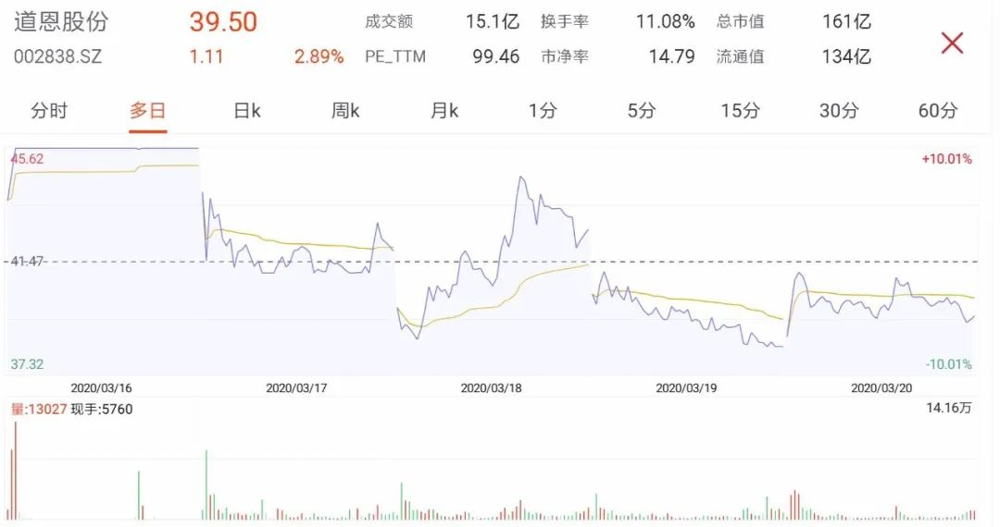

“口罩概念第一股”成色如何？道恩股份17个涨停谁受益
原文链接 备份链接 作为A股涨幅最大的“口罩概念”第一股，道恩股份近期吸引各路游资聚集炒作，股东也趁股价在高位推出减持计划。这家公司的业绩成色究竟如何，引发市场关注争议 文 |《财经》记者 张建锋 杨秀红 编辑 | 陆玲 随着新冠病毒疫情 …

壹
“没有不倒下的龙头。”几天前清仓了道恩股份（002838.SZ）后，刘川在一个上百人的股票群中甩下了这句话。
过去一个半月，这只中小板股票不断诱惑和刺激着投资者。频繁的换手之间，早先低位进场的人可能已大赚一笔，但不少追涨杀入的股民，或许仍在山顶瑟瑟发抖。
3月19日15点，道恩股份再次跌停报收。盘面上，全天K线走势就像一副毫无生气的心电图，所在的口罩概念板块也是一片哀嚎。
近几日的萎靡之前，道恩股份刚上演了一波飙涨行情。1月23日，春节前最后一个交易日，道恩股份收盘价为11.46元，在此之前的整个一月份，其最高股价也仅为12.4元。2月3日，极度恐慌下的A股重新开盘，当天两市超过近3200只个股跌停——但防疫概念股却逆势大涨，道恩股份迅速成为明星，开始了它的耀眼之路。
截至19日收盘，节后以来的34个交易日中，这只股票收获了18个涨停，股价也在3月10日盘中最高触及62.5元，较2017年上市时的发行价上涨309%。在蔓延的炒作氛围中，道恩股份的市盈率也从当时的23倍，一度超过了140倍。
在同一时期，道恩股份振幅超过10%的交易日就有10天，这意味着行情十分震荡。虽然一连发了七条股票异常波动公告，但这家明星公司的热度依然未减。
富贵险中求。
刘川特意组了一个道恩股份的股票群，他在里面不断分享信息，向群员们提供操作建议。在此次疫情之前，道恩股份和所属的塑胶制品行业，并不像近期这般炙手可热。截至去年三季度末，其股东数量也仅为7005户。不过，由于业务涉及到口罩制造，道恩股份在A股市场的人气得以迅速蹿升。
股吧里也变得十分热闹，艳羡、怀疑和观望的股民们，几乎每天盘后都不停地发帖讨论。“我是38元左右买入的，但一个星期后就卖了，怕太高了不敢拿。”一位股民如此告诉“商业人物”。
烈火烹油的画风，在3月10日起了变化。虽然股价在盘中达到开年来的最高位，但当天道恩股份却出人意料地跌停。此后几个交易日，这只股票掉头向下，期间更是数次跌停。以3月9日收盘价计算，截至19日，其股价已跌去35%，流通市值蒸发将近70亿元。不过在大幅度回调之际，游资大举进出下的道恩股份仍偶有回升——正是这种震荡带来的折磨，让继续持有还是割肉离场，成了众多投资者的心头拷问。
已抛售道恩股份的刘川，把注意力转向了其他板块。而股票群中则不时有人直呼懊悔，说没能及时卖出止损；更有在62元附近进场的股民，或只能继续在原地无奈“站岗”。
贰
道恩股份成立于2002年，主营产品是热塑性弹性体、改性塑料以及色母粒，主要应用于汽车工业、家用电器、医疗卫生等领域。2017年1月，这家坐落在山东半岛北部龙口市的化工厂商，在深交所中小板上市。
道恩股份实控人于晓宁、韩丽梅夫妇，从1991年成立的一个仅有数人的小商场起家，如今已登上全国富豪榜。据《2019年胡润百富榜》显示，他们以36亿元财富，位列第1148名；而道恩股份所属的道恩集团，去年以209亿元的营业收入，排在中国民企500强的第424位，在省内则位列第58位。
于晓宁头衔众多，不仅身为山东省人大代表，还担任中国合成树脂供销协会副理事长、烟台市工商联副主席以及烟台市工商业联合会橡塑业商会会长等。
道恩股份所处的，原本是个相当小众的行业。在资本市场，这种缺乏想象空间、概念炒作价值不高的个股，并不十分引人注目。过去一年，道恩股份的股价就长期徘徊在20元以内，可谓波澜不惊。今年1月18日，于晓宁还正常出席了山东省人代会会议。直到几天后疫情大面积爆发，这家在口罩产业链上占据关键一环的低调厂商，才迅速曝光在市场面前。
医用口罩通常由三层组成，内外层均是无纺布，最关键的中间层则是熔喷布，起到过滤、屏蔽和绝热等作用。以往国内熔喷布产量很低，2018年全国仅产出5.35万吨，日产量约为180吨。除了用于口罩，这些熔喷布还用于环保材料、电池隔膜和服装材料等。此外，由于熔喷布生产设备昂贵，生产线调试周期长（一般需3-5个月），因此与下游的口罩生产商数量相比，国内熔喷布厂家并不算多。
这直接导致了当前市面上熔喷布紧缺。其价格从疫情前的每吨两万元左右，一度涨至四五十万元。即使行业有所调整，但据隆众资讯最新数据，熔喷布现货依然紧张，高位仍保持在30万元/吨左右。
局面紧张之际，道恩股份开始受到热捧。
作为熔喷布原料——聚丙烯熔喷专用料的生产商，道恩股份的市占率据称高达40%。于晓宁此前接受《中国企业家》采访时称，以往公司每天的熔喷料订单仅为100吨左右，但一月底之后订单量骤增，已严重超过道恩股份的产能。他不得不将其他产品的设备拆分，将原有的8条生产线扩张至21条，全部用于生产熔喷料。另据龙口当地报纸报道，于晓宁还向中石油销售相关领导求助，增加采购1300吨熔喷料所需原料，以解决生产压力。
叁
一位去年调研过道恩股份的券商人士对“商业人物”称，在最近中石化介入熔喷料生产之前，道恩股份是绝对行业龙头。“中石化这次是’国家任务’，对道恩算不上利空，有助于行业更加规范。其实，道恩股份的主要看点是热塑弹性体业务，这次是误打误撞把原来不怎么赚钱的改性塑料业务（如熔喷料业务等）给炒起来了。”
财务数据显示，熔喷料确实并非道恩股份的主要收入来源——去年其销售收入仅占总收入的20%左右。在3月10日大跌前一天，道恩股份就曾发布公告向市场“预警”，表示熔喷料在营收中占比不高，而其他主要产品也正在遭受疫情的冲击。
“我关注这家公司时估值还不贵，市值才30亿左右，业绩也就一个多亿。当时感觉它成长性比较好，所以就持续看看。”上述券商人士回忆。而在当前的动荡行情之下，道恩股份的总市值已超过160亿元。身处疫情风口的中心，在翻来覆去的炒作之中，这只口罩概念股已今非昔比。
正在切身经历这波财富洗礼的，无疑还有于晓宁、韩丽梅夫妇。目前，于晓宁通过道恩集团间接持有道恩股份48.51%股份，韩丽梅则持股21.08%，二者合计共持有近70%的股份。以节前最后一个交易日收盘价计算，其持股总市值约32亿元。而如果按照62.5元的阶段性高点计算，于晓宁夫妇手中的财富曾暴涨至175亿元。只不过随着股价持续回落，这轮诱人的纸面富贵正在不断缩水。
2月12日，道恩股份曾公告表示，韩丽梅以及另外两名高管计划将减持3.26%。从减持可以执行的3月4日至今，他们是否在二级市场有过操作不得而知。而与此相反，也有道恩股份的关联人士摩拳擦掌增持股票——一位独董的配偶在3月10日斥资150万元，以约53.1元/股的成本价进场，其可能在期待下一波的上涨行情。
从业绩上看，道恩股份仍在以明显的速度增长。2018年和2019年，其营收分别为13.63亿元、27.33亿元；归母净利润为1.22亿元、1.68亿元。由于疫情对业绩的有利影响，有市场机构甚至大胆预测，道恩股份今明两年的净利润均将超过4亿元。
但疫情催生的短期效应，能否持续推高股价，则是另外一个问题。与疯狂的熔喷布市场完全不同，道恩股份生产的熔喷料，整体市场价格甚至出现下滑。隆众资讯统计显示，本周国内熔喷料的价格从15000元/吨跌至13000元/吨，最低价位已触及12500元/吨左右。
其实并未处在风暴中心的道恩股份，却在资本市场狂热的情绪裹挟下，股价被“炒到了天上”。
肆
过去两个月，往日乏人问津的口罩行业成了“印钞机”，A股市场更是见证了概念股的火热。
各路参与者蜂拥而至。连勤勤恳恳造车多年的比亚迪，都转产成了全球最大的口罩生产商。如今在深圳街头，“比亚迪牌”口罩正在以平价源源不断地供应。
巴菲特的老搭档查理·芒格说过，如果不能接受股价腰斩，那就说明你不适合投资。道恩股份最近的剧烈波动，上演的就是类似场景。感受刺激之余，“口罩概念股”是否已结束的疑问，正盘旋在焦虑的市场上空。
有意思的是，为抗击疫情，最近高调宣布介入熔喷料、熔喷布和口罩生产全链条的中石化，股价却一直徘徊在区区四五元之间，保持“情绪稳定”。真是吭哧吭哧干活有我，股市分红没份。
欺负老实人啊。
（文中刘川为化名）

推荐阅读


严正声明：“商业人物”所有原创文章，转载均须获授权。一切形式非法转载，包括但不限于盗转、未获“商业人物”授权通过第三方转载行为，均属侵权行为，“商业人物”将公布“黑名单”并追究法律责任。“商业人物”只愿与尊重知识产权的机构合作。
投稿、约访、合作，联系邮箱：bizleaders@qq.com
添加微信biz-leader，获转载授权或邀您加入商友群
1.长按右侧二维码即可关注***。*
2.期待您置顶与星标。欢迎分享与评论，欢迎通过留言或私信方式给我们提供选题线索。
3.点击“阅读原文”，看商业人物官网，获取更多精彩内容。**

原文链接 备份链接 作为A股涨幅最大的“口罩概念”第一股，道恩股份近期吸引各路游资聚集炒作，股东也趁股价在高位推出减持计划。这家公司的业绩成色究竟如何，引发市场关注争议 文 |《财经》记者 张建锋 杨秀红 编辑 | 陆玲 随着新冠病毒疫情 …
原文链接 备份链接 现在校园里还没有人戴口罩，但国内的亲人总是打电话说美国疫情严重，出门一定要戴口罩，这让他非常为难。 文｜李 莹 今年春节，我到美国旅游，结果因为新冠肺炎疫情，回程航班被取消了……一言难尽。这是我滞留美国的第42天，西 …
原文链接 备份链接 从2万/吨到40万/吨，短短一个多月的时间，口罩“心脏”熔喷布价格已经上涨近20倍。分析认为，熔喷布产能和口罩产能阶段性不匹配是涨价主因 文 |《财经》记者 杨秀红 张建锋 王颖 陆玲 | 编辑 被称为口罩“心脏”的 …
原文链接 备份链接 20天上线口罩生产线，林芃遇到了很多转产防疫物资的同行，见识了原材料价格一天数变，还见识了借稀缺资源做起诈骗的人。他发了个朋友圈：这场疫情，像是一个放大镜，让我们发现，好人是真好，坏人是真坏，蠢人是真蠢，善良的人是真 …
原文链接 备份链接 口罩产量的大幅增长，让此前处于小众需求的口罩“心脏”熔喷布，成为市场争相采购的对象。该产品价格也从此前的2万元/吨，大幅飙升到现在的30万元/吨左右 文 |《财经》记者 张建锋 杨秀红 王颖 编辑 | 陆玲 “此时， …